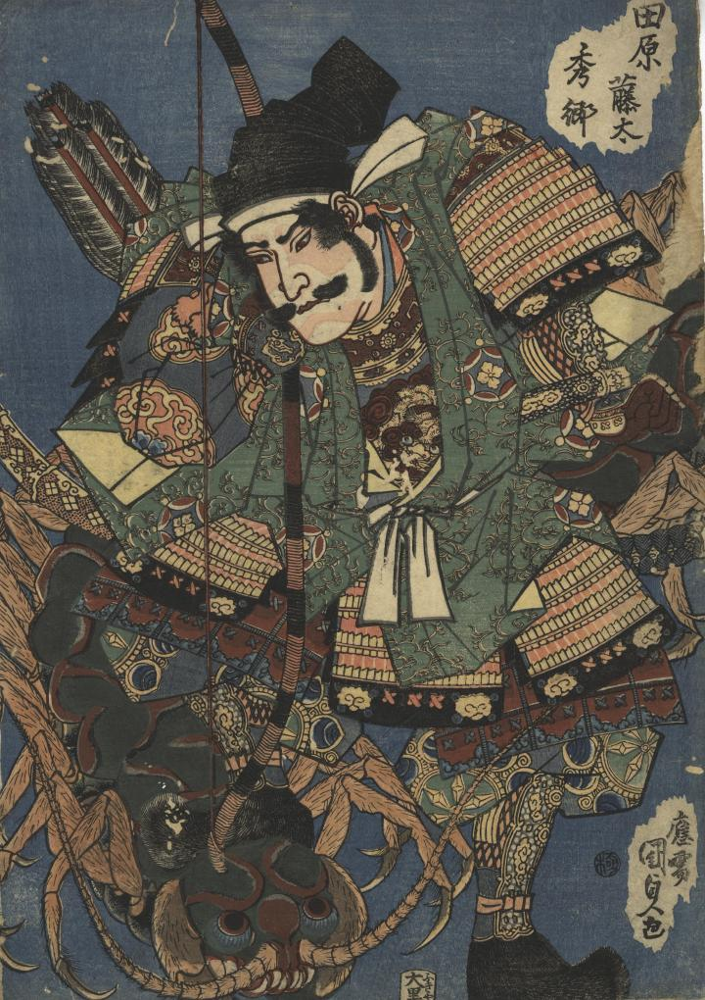

← 图鉴索引

田原藤太秀郷が大百足を右足で踏みつけている。
著作者：國貞／出典：親書誌：U426_nichibunken_0339：田原藤太秀郷；フジワラ トウタ ヒデサト／日付：2014／資源識別子：U426_nichibunken_0339_0001_0000
Copyright (c)2010- International Research Center for Japanese Studies, Kyoto, Japan. All rights reserved.